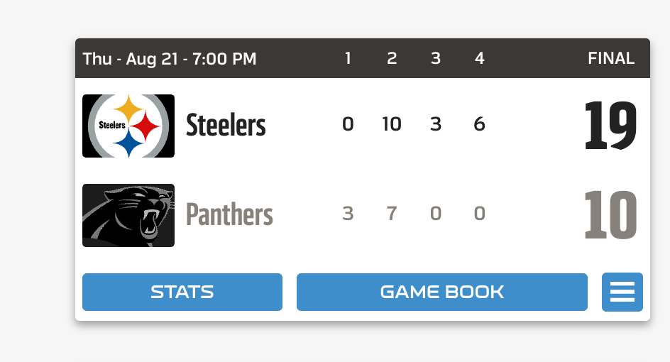
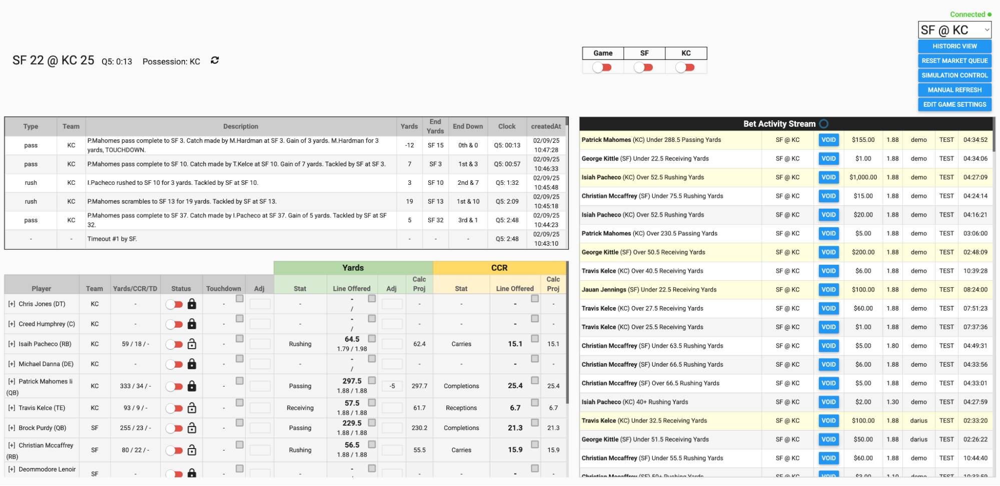
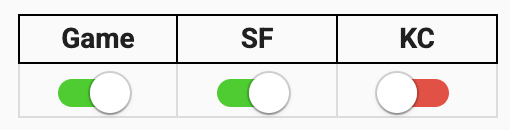
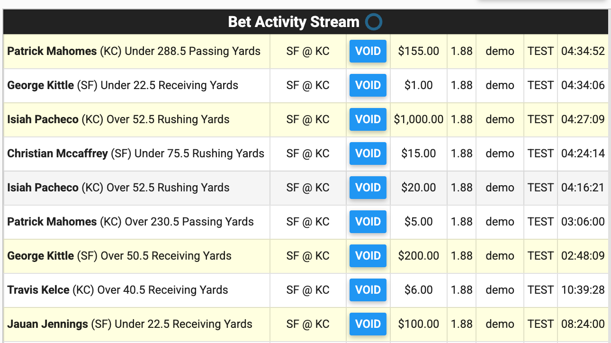
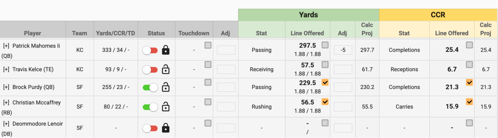
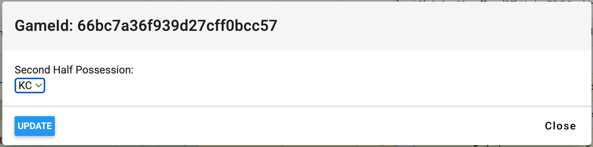
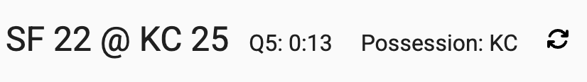
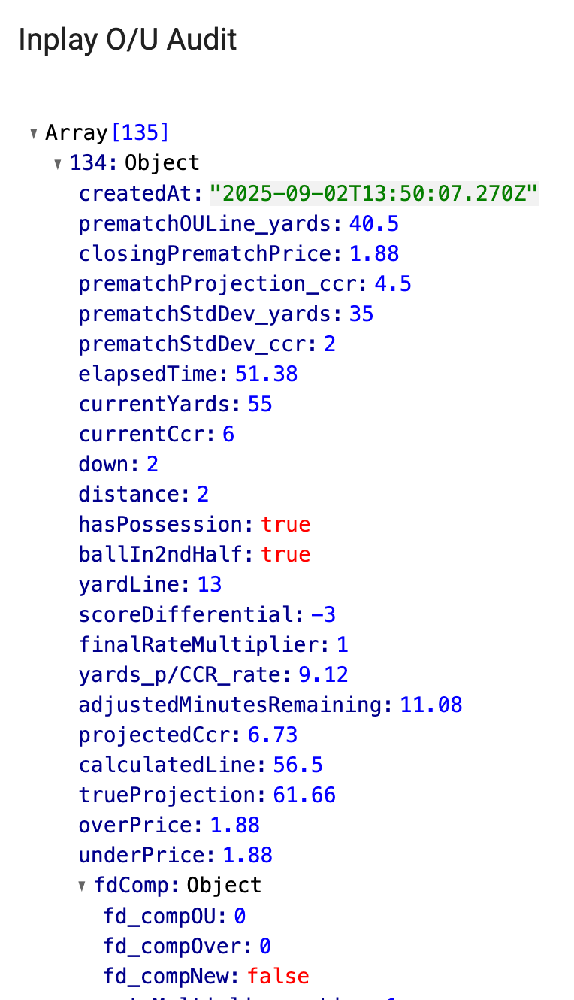
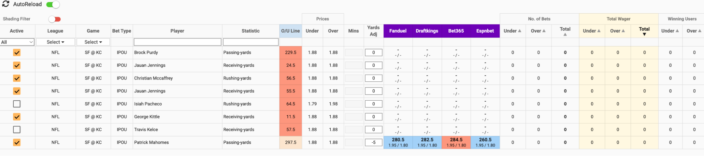

NFL
Play By Play Data:

In-Play Monitoring Tool:
- In our LHS menu it can be found under the third heading, In-play Manager
- Select your game from the dropdown menu in top right corner

- There are three main sections: Play by play data, our markets/prices and bet activity stream.
- The PBP data updates in real time as we receive plays in the feed. This is typically 30 seconds behind the actual live game but should be fairly close to a video stream.
- When an offense is driving, we want to shut off their markets. We do this using the team toggle at the top. When the toggle is red, that means the team’s player markets are shut off. We need to manually turn them back on when appropriate. In this example, we would have Kansas City shut off if they had the ball.
- During long commercial breaks or end of quarter, we can turn the offense back on. But we want to shut them back off when the game resumes.

- The bet activity stream on the right shows you all the bets coming in on this game. Bets highlighted in yellow are $100 or more.
- Do not void any bets without getting permission first. Please post in slack if you feel bets need to be voided due to beating the PBP feed or a serious technical or pricing error

- The final table at the bottom is the markets/prices.

- The third column shows the players current stats for their position. CCR stands for completions/carries/receptions depending on their position.
- When the status toggle is green, that means the player’s markets are open for betting. This will automatically toggle red/green based on their team toggle. You should only have to toggle an individual player on/off if they are hurt or there is a serious pricing issue. If a player is hurt and we no longer won’t to offer their markets, we need to toggle them red and click the lock button to keep them shut off.
- The Yards and CCR column is what our current line and price is for each market. This updates automatically based on the pbp data.
- We very rarely want to adjust this unless there is very 1 sided betting activity or we are significantly different from the main comps such as Fanduel, Draftkings or Bet365.
Troubleshooting:
- There is one setting we want to check at the start of each game. It’s a blue button in the top right called Edit Game Settings. We want to make sure we have the correct team receiving the ball in the 2nd half. If it’s wrong, we need to change it and click update.

- If the PBP feed every stops updating, we can click the refresh button next to the time/score to jump start it.

- If a player’s price/line looks wrong compared to comps, we want to capture the technical data and pass it on in slack for our tech team to investigate. You can click on the line and open the modal. Search through the arrays to find the time in game we are looking for and screenshot this IP O/U Audit info:

In-Play OU Tool:

- This is our new Over/Under trading tool for in-play. This is where traders will adjust lines/prices for players based on betting activity and comps.